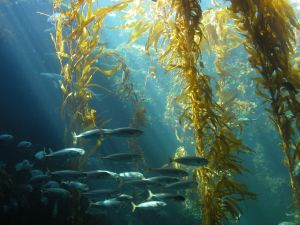

Introduction
A diverse amount of plants live in tropical oceans. Phytoplankton are tiny plants that are responsible for the greenish-blue color of the ocean water. In addition, kelp are able to survive in tropical oceans, not just temperate oceans. Sea anemone are another common type of plant that abide in tropical oceans. Finding Nemo was set in the tropical ocean, and the main character was a clownfish who lived in sea anemone. Seagrass are also commonly found in these areas.

Adaptations
Although kelp is often associated with temperate oceans, and some species of kelp are adapted to tropical oceans. Kelp are very long seaweed that grow in "forests" in cooler waters. In the tropics, however, they do not grow as densely. Although it can sometimes grow near the surface, kelp usually grows at between 40 and 200 feet below the surface of the ocean.Most ocean going plants have adapted to their environment by developing gas sacs and air sacks to lift their photosynthetic surfaces towards the surface of the water, to collect sunlight. Particularly in the deep ocean, these sorts of adaptations are critical. Examples of this type of adaptation include Sargasso sea weed, which are sometimes called 'sea grapes' because of the visibility of the gas sacs.

List of Plants
-
Phytoplankton
-
Kelp
-
Caulerpa
-
Ecklonia Radiata